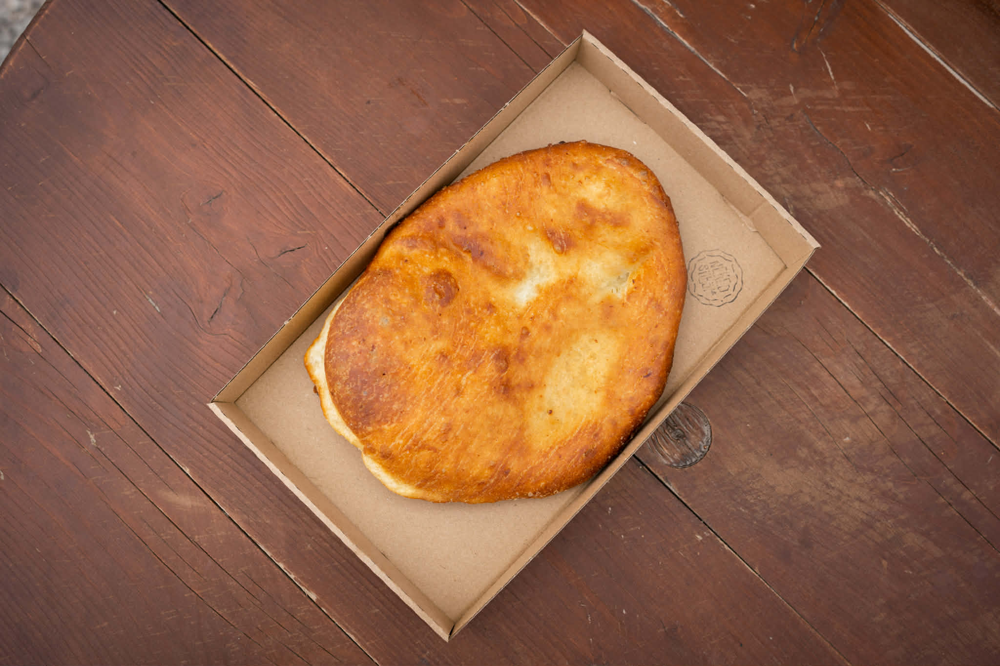
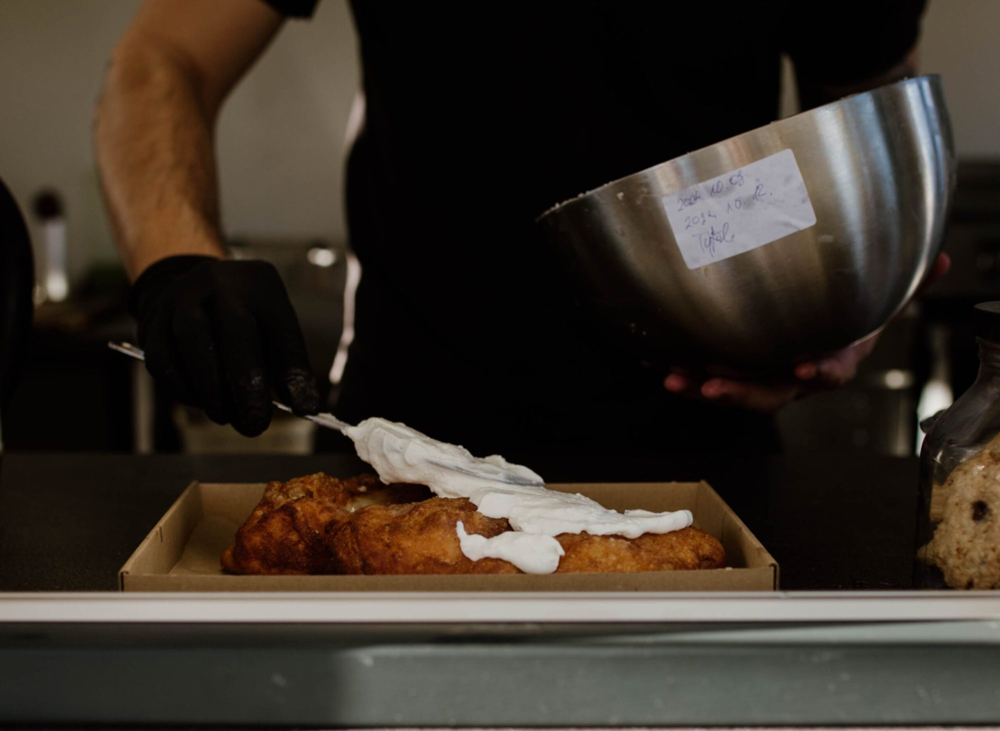
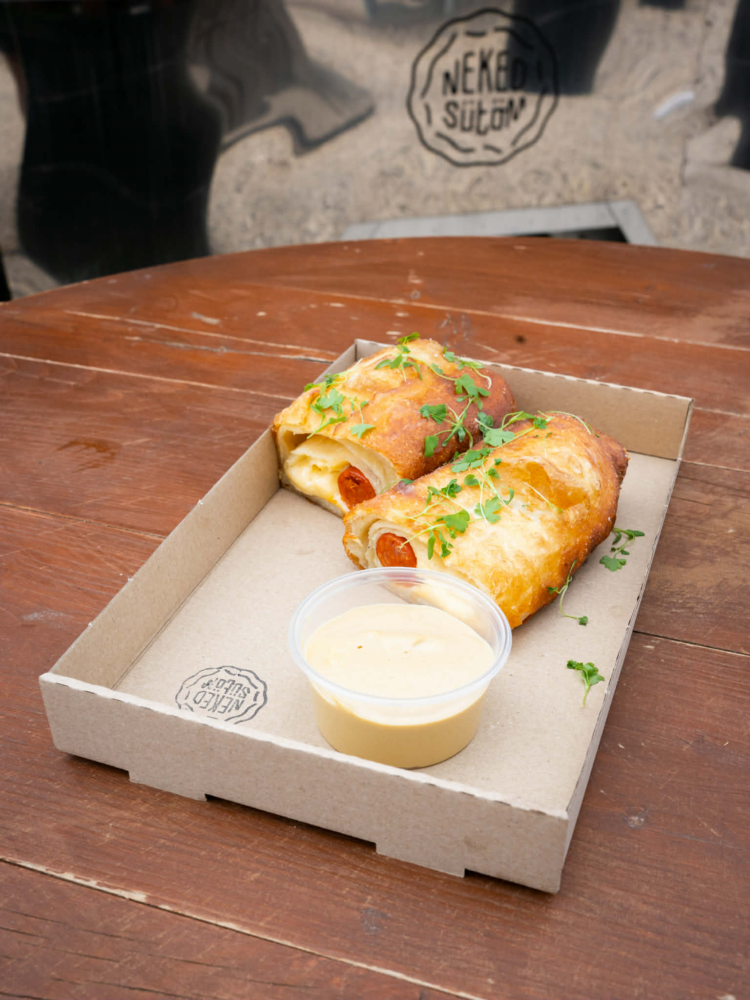
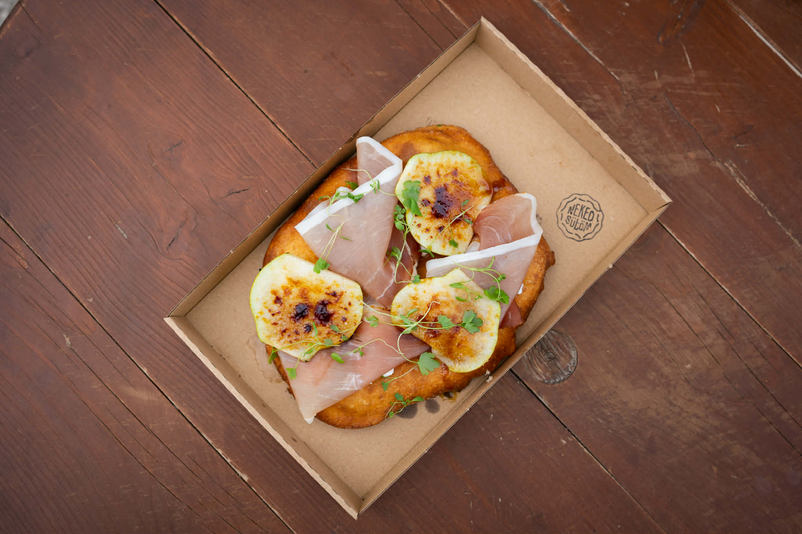
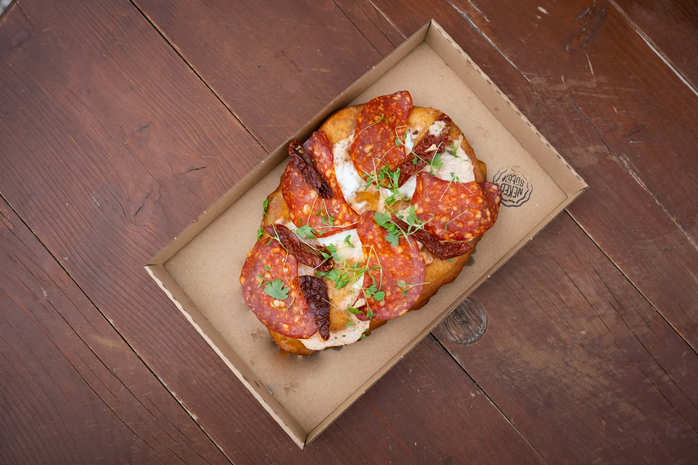
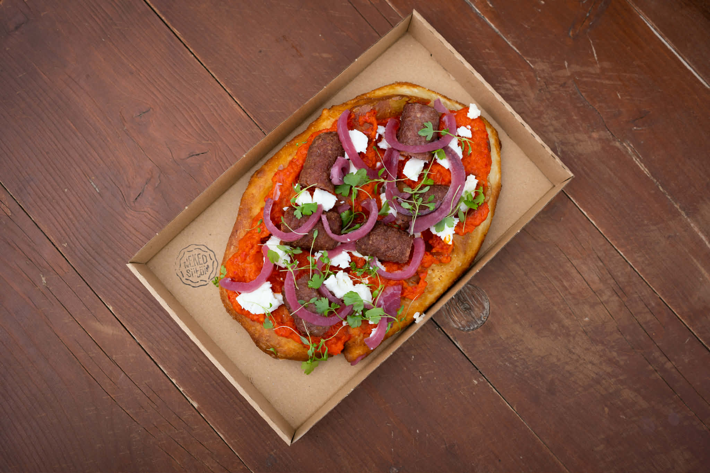

Válaszd ki a kedvencedet

AlapSima lángos
Kovászos-burgonyás tésztával, az alap — letisztult ízek kedvelőinek. A klasszikus, amit mindenki szeret.

KlasszikusTejfölös lángos
Tejföllel, a klasszikus változat kedvelőinek. A ropogós tészta és a krémes tejföl tökéletes kombinációja.
Sajtos lángos
Ropogós, kovászos-burgonyás tészta, bőséges reszelt sajttal megrakva. Egyszerű, de ellenállhatatlan.
 Kettős feltét
Kettős feltét
Sajtos-tejfölös lángos
Kettős feltéttel — igazi klasszikus kombináció. A tejföl és a sajt együtt adja azt a tökéletes ízt, amire mindenki visszajár.

TartalmasKómás Kedvence
Ha valami szaftosabb, tartalmasabb falatra vágysz — bőséges feltétekkel, hogy igazán jóllakj.

KülönlegesFekete Erdő Sonkás
Mozzarella sajttal és karamellizált körtével — egy kicsit elegánsabb, különlegesebb ízvilág.

KülönlegesSzarvasgombapestos chorizós
Szarvasgombapesto és krémes tejföl találkozik a füstös chorizóval, olvadt mozzarellával és szárított paradicsommal.
 Street food
Street food
Láng-Dog
A tökéletes street food élmény: bécsi virsli, ropogós bacon, pirított hagyma, olvadt sajt — ketchuppal vagy mustárral.

Balkáni kedvencLángoslav
A Balkán ízei lángos tésztán — füstös csevap, csípős ajvár, krémes brindza és savanyú lilahagyma.